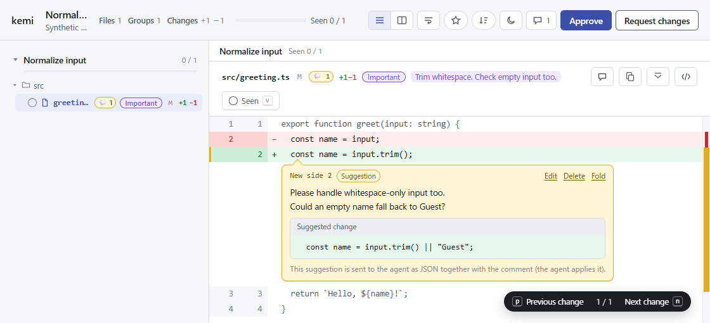

FOR THE HUMAN IN THE LOOP
Read the change.
Share your intent.
After the code comes the review.
Read the diff. Leave a thought on the line.
Send your intent back to the agent.
kemi is a review tool that runs locally.
Get started with kemi
A human reads.
An agent receives.
A place to think and communicate,
between terminal and browser.
- 01
Open the diff
Working tree, staged changes, or a commit range. Pass the changes you want to review to the CLI, and your browser opens.
kemi --from main - 02
Put intent on the line
Comment where it matters. Add replacement code as a suggestion to show exactly what you want to change.
Line comments + suggestions - 03
Return your review
Approve or request changes. Your comments and suggestions return to the terminal that started kemi as one JSON document.
Standard output → agent
{ } See the JSON an agent receives Sample excerpt
Line numbers, comments, and suggestions keep their structure as they return to the agent. The agent applies the suggested changes.
{
"kemi": 1,
"title": "Normalize input",
"verdict": "changes_requested",
"approval": [],
"comments": [
{
"path": "src/greeting.ts",
"side": "new",
"start_line": 2,
"end_line": 2,
"body": "Please handle whitespace-only input too.\nCould an empty name fall back to Guest?",
"suggestion": {
"replacement": " const name = input.trim() || \"Guest\";"
}
}
]
}Give the change
your attention.
The views you need, close at hand.
The judgment stays with you.
- See the result. Follow the history.
- Switch a commit range between its final form and a per-commit view. Follow a changed block back to the commits that made it.
- Look beyond the source.
- Markdown, CSV / TSV, and images also have rendered views. Check the source diff alongside the visual change.
- Read locally. Return suggestions.
- kemi listens on loopback by default. It never edits your files; suggested changes are returned as JSON.
Try kemi on
your next change.
The name comes from the Japanese “kemi suru”: to review.
Start by opening a diff in your own repository.
mise use -g github:ba0918/kemikemi --worktreemacOS · Linux · Windows ／ x86_64 & arm64
Install from a ZIP on Windows
Download kemi-<target>.zip for your CPU from the latest GitHub Release. Extract kemi.exe and add it to your PATH. Git must also be on your PATH.